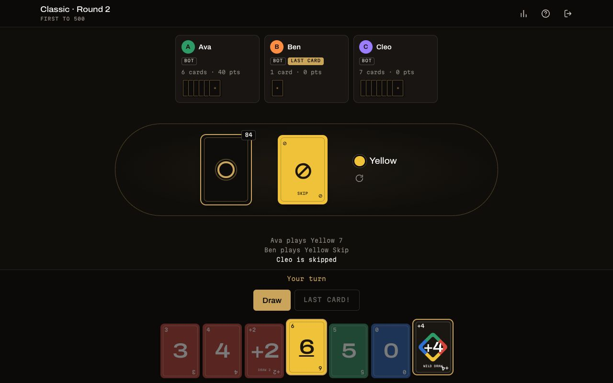
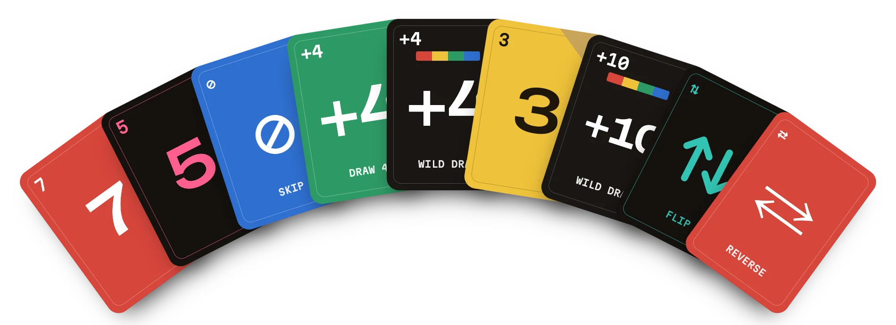
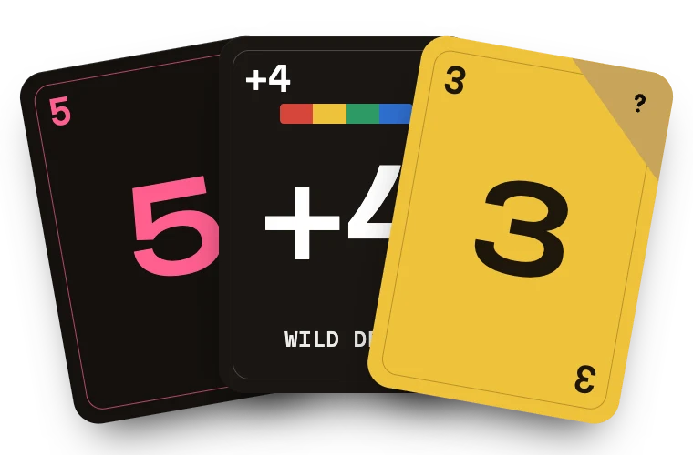
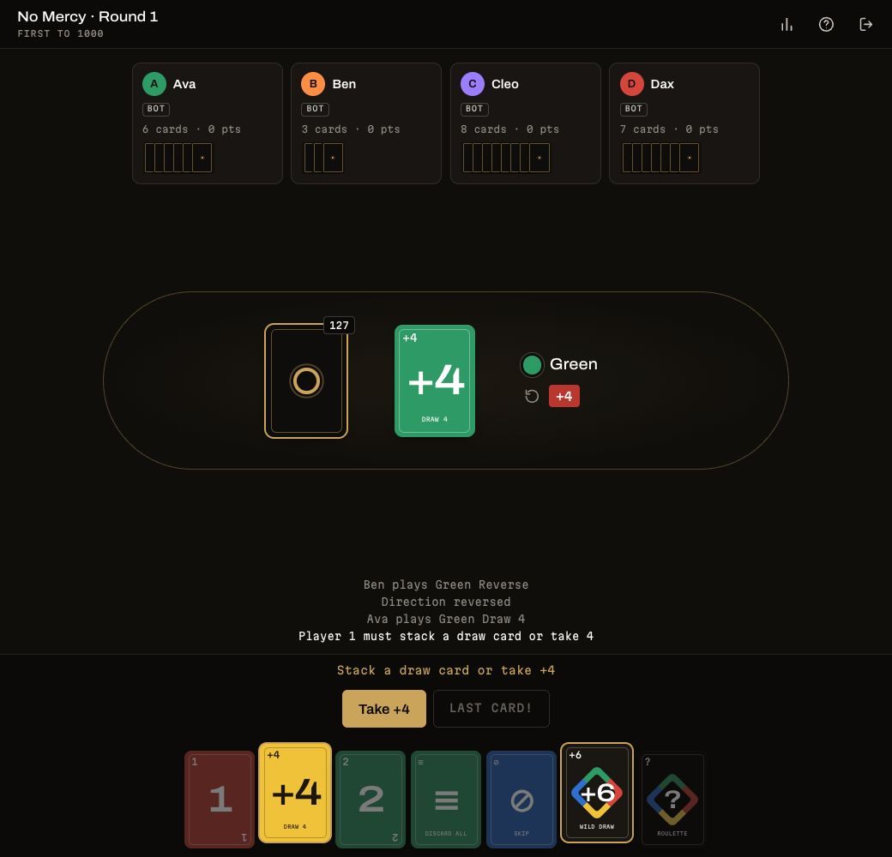
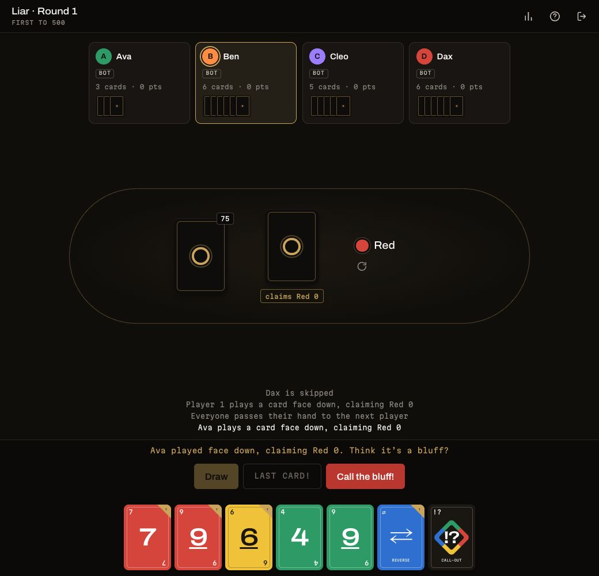
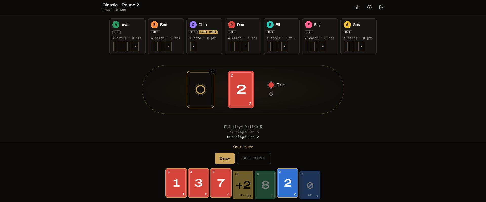
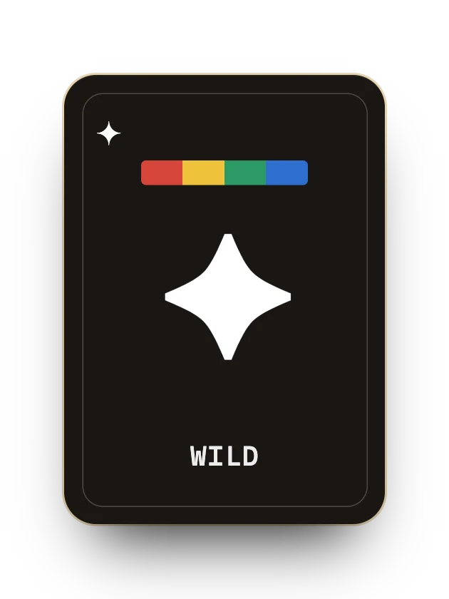
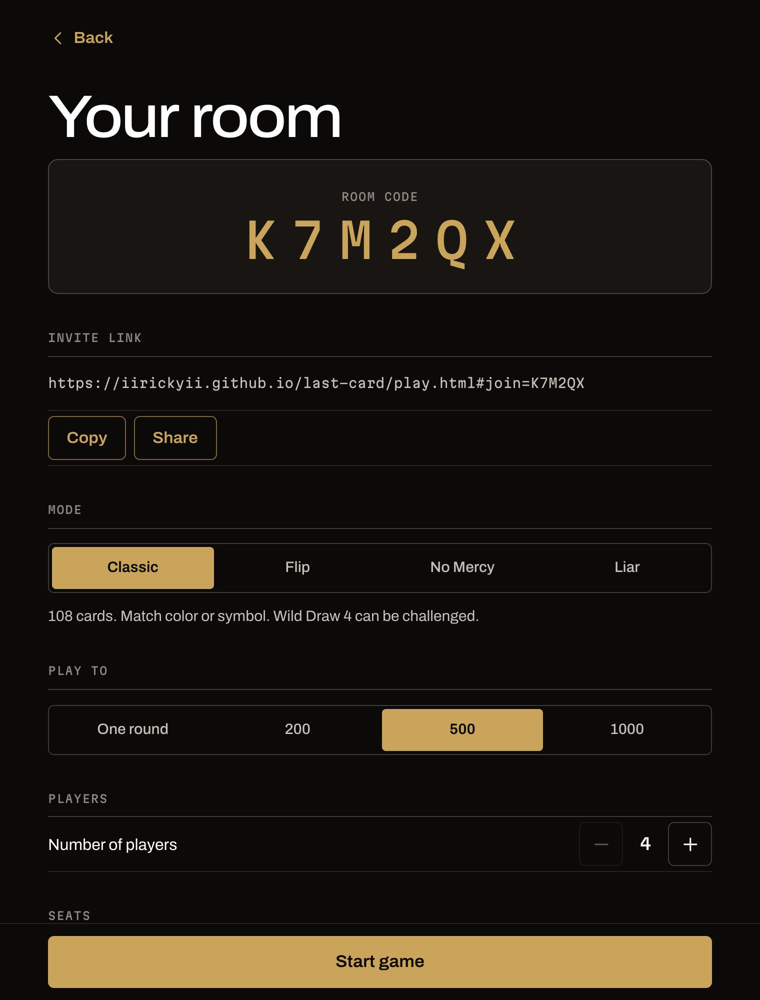

Classic: match color or number
108 cards, first to 500. A Wild Draw 4 can be challenged.

Free in the browser for 4 to 8 players, in four rule sets: Classic, Flip, No Mercy and Liar. Play bots, pass one phone around the table, or send friends a room code.


108 cards, first to 500. A Wild Draw 4 can be challenged.

112 two-sided cards. One Flip card turns every hand to the dark side.
168 cards. Answer +4 with +6 or +10, or take the whole stack.

Bluff cards go down face down with a claim. Call it or let it stand.

Every seat shows its count and score. Bots take the seats nobody claims.

Down to one card? Press Last Card before the next player moves. Anyone who catches you first makes you draw two.

Host a game and you get a six-character code and an invite link. Friends join from a phone or a laptop, and each device is sent only its own hand. Your browser runs the game; bots fill the seats nobody takes.
Some school and office networks block direct connections. Then pass one device around the table instead.
